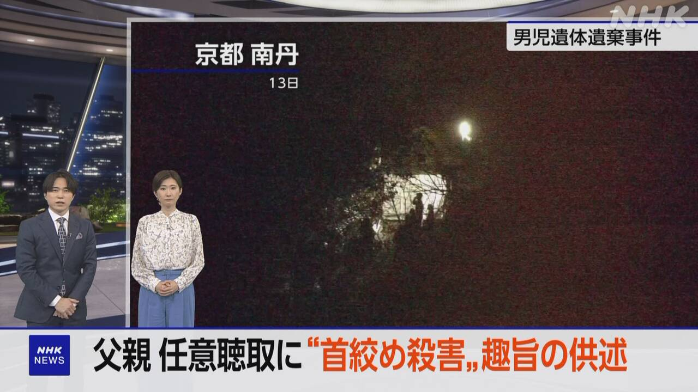
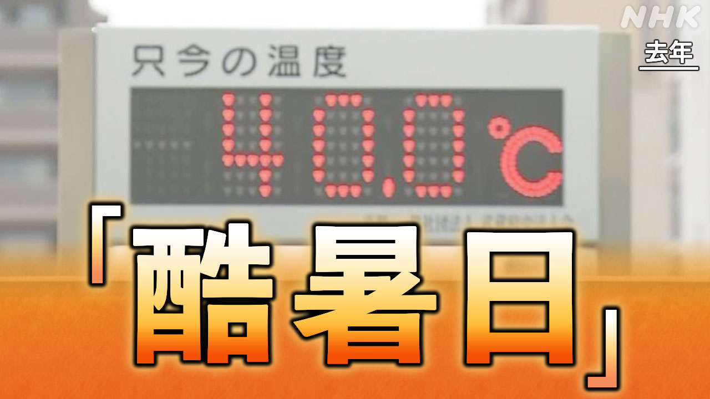

最新ニュース
1️⃣ 青森県などで大きい地震がありました

地震と津波のニュースです。
20日午後4時52分ごろ、青森県で大きい地震がありました。
青森県で震度5強でした。
気象庁は、津波について、津波警報と津波注意報を出しました。
津波警報が出たのは、岩手県、北海道太平洋沿岸中部、青森県太平洋沿岸です。
津波注意報が出たのは、宮城県、北海道太平洋沿岸東部、北海道太平洋沿岸西部、福島県、青森県日本海沿岸です。
2️⃣ 京都府の事件 父親が「首をしめて殺した」などと話した

京都府南丹市の男の子が亡くなった事件のニュースです。
警察は16日、父親の安達優季容疑者を逮捕しました。
亡くなった安達結希さんを山に運んで隠した疑いです。
この事件を調べている人によると、父親は逮捕される前、「首をしめて殺した」などと話していました。父親のスマートフォンには、亡くなった人を隠す方法を調べた履歴もありました。
警察は、男の子が亡くなったあと、父親が調べていたと考えています。
3️⃣ ローマ教皇「乱暴なリーダーたちが世界を壊している」
ローマ教皇が、戦争をするリーダーたちを批判しました。
アフリカのカメルーンで16日、ローマ教皇のレオ14世が話をしました。
レオ14世は「乱暴なリーダーたちが世界を壊している」と話しました。そして、壊すのは一瞬だが、直すには長い時間がかかると言いました。
ローマ教皇について、トランプ大統領は「私は教皇を敵だと思っていない。イランは核兵器を持ってはいけない。教皇は、それを理解しなければならない」と話しました。
4️⃣ 気温が 40℃以上になった日は「酷暑日」

気象庁は、気温が40℃以上になった日を「酷暑日」と呼ぶことにしました。
25℃以上の日は「夏日」、30℃以上は「真夏日」、35℃以上は「猛暑日」です。40℃以上の日には、名前がありませんでした。
気象庁は、40℃以上になる日が増えたため、名前をつけることを考えました。
ウェブサイトでアンケートをした結果、「酷暑日」がいちばん多くなりました。ひどく暑い日という意味です。
酷暑日と聞いたら、熱中症などにならないように対策してください。
- 〜がある / 〜がいる
- 〜ごろ
- 〜について
- 〜など
- 〜ている / 〜でいる
- 〜によると
- 〜後 / 〜あと
- 〜いけない
- 〜ならない
- 〜なければならない
- 〜以上
- 〜になる
- 〜こと
- 〜ことにする
- 〜ため
- 〜という
- 〜ように
- 〜てください / 〜でください
vebaev.github.io
Generated: 2026-04-20 12:06:06 UTC